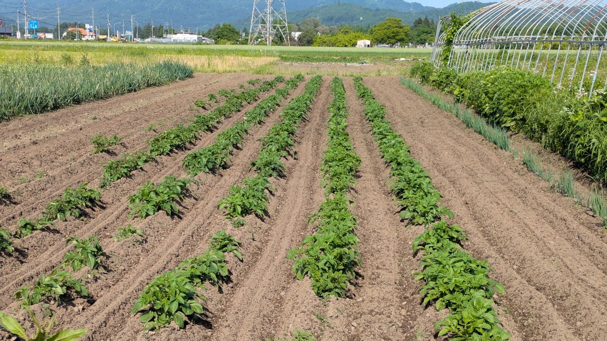
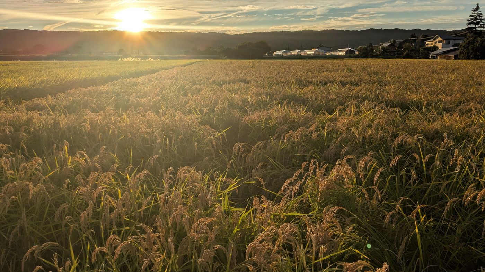
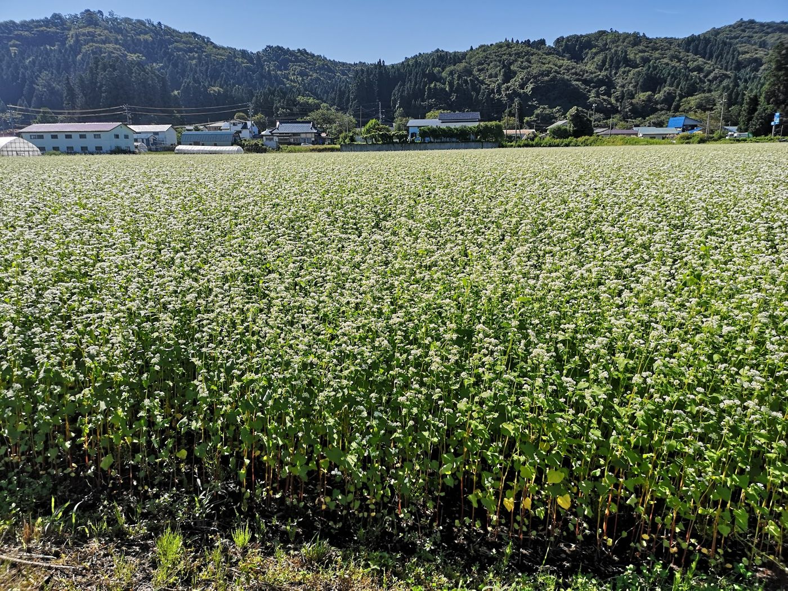
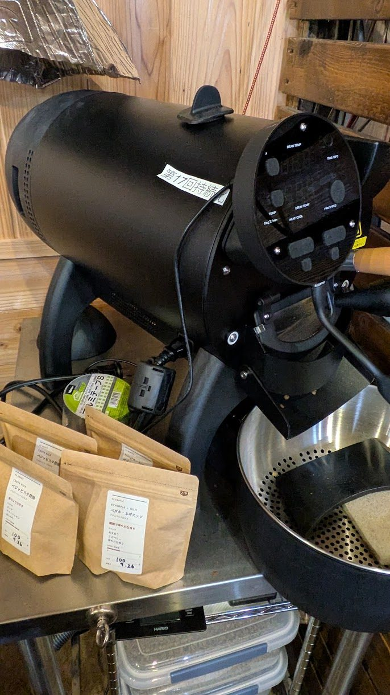
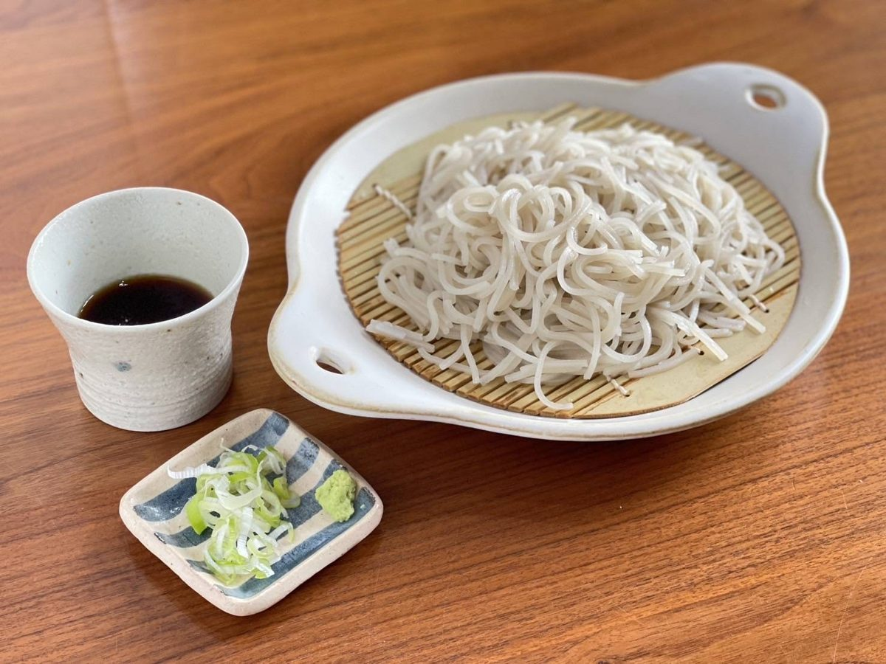

Our Commitment
こもとのこだわり
「こもと」は「地元素材のお料理を食べていただきたい」という思いから、平成28年5月にオープンした農家レストランです。自家生産の野菜やお米、目の前の畑で育てられる蕎麦や小麦「ゆきちから」を中心に、素材を活かしたお料理を提供しております。
有機へのこだわり
私たちが農業を始めたのは平成3年。当初から自給自足的な生活に憧れ、「何でも自分たちで作ってみよう」という思いが出発点でした。お米から始め、野菜や養鶏へと広がり、現在では以下のような取り組みを行っています。
- 水田
- 11ヘクタール（うち4ヘクタールは紙マルチ）
- 畑
- 110アール（有機肥料100％、農薬不使用）
- 養鶏
- 約300羽。自家栽培の飼料米で「コーンフリー」を実現
お米を食べた鶏の卵は黄身が淡いレモン色になり、自家製プリンなどに独特の色合いをもたらしています。


地粉へのこだわり
坂本地区に広がる畑地では、蕎麦と小麦が二毛作で栽培されています。当店では、この地蕎麦と地小麦から取れる地粉を使用し、こだわりのメニューを提供しています。

珈琲・紅茶へのこだわり
当店で提供している珈琲は、大阪の「田代珈琲」が生産地の農家から直接輸入しているスペシャルティコーヒーと呼ばれる珈琲豆を使用しています。農家でもある私どもと、本来農作物である珈琲を農家から直輸入する田代珈琲のオーナー、田代氏との価値観の一致で、当店では同社の珈琲を使用することといたしました。
また紅茶は、仙台の紅茶の輸入元である「ガネッシュ」がインドからシーズン毎に輸入している「新茶の紅茶」と呼ばれる茶葉を使用しております。私どもがガネッシュの紅茶を扱い始めて早いもので29年になりますが、いつも変わらない品質の茶葉を届けてくださる同社のこだわりの紅茶を、是非皆様にも味わって頂きたく思います。
珈琲・紅茶を淹れる水は、造り酒屋をしていた我が家の深井戸（地下65m）からくみ上げた地下水を使用しております。
またコーヒー・紅茶の相方として使用するミルクは、地元が誇る牛乳「べこの乳」を使用しております。もちろんミルクティー、ラテにも100％この牛乳を使用しております。

自家生産・地元素材・食材へのこだわり
当店で使用する素材は、可能な限り自家生産の有機農産物や地元の素材を取り入れています。調味料や食肉など地元調達が難しいものについては、納得のいく食材を選ぶよう心がけています。
蕎麦へのこだわり
当店のお蕎麦は、地元産の蕎麦粉を100％使用し、手打ちにこだわっています。蕎麦は地元の蕎麦打ち名人が地蕎麦を自家製粉し、蕎麦の中心部分から取れる極上の粉（全体のわずか5割）だけを使っています。この粉を使った蕎麦は、つなぎを一切使わずに打ち上げられた特別なものです。
少し前まで、このような蕎麦を食べるには、蕎麦打ち名人と知り合いになるしか方法がなく、「お金では買えない蕎麦」として「幻の蕎麦」とも呼ばれていました。私たち自身も、仲間内で「幻の蕎麦会」と名付けた集まりを開き、その蕎麦を楽しんでいました。「この特別な蕎麦を、ぜひお客様にも提供したい！」という思いが、このお店を始める出発点でした。
当店で提供する蕎麦のたれは、かつて私たちが営んでいたそば屋「みやま茶屋」の伝統を受け継いだものです。「みやま茶屋」は46年前に創業しましたが、震災の年の4月、火事により残念ながら閉店しました。
お蕎麦のたれは、その「みやま茶屋」創業当時から続いたかえしを仕込んで、カツオ節と煮干し、昆布でだしをとり、三種類の醤油をつかった伝統の作り方で仕込んだ「蕎麦たれ」です。このたれは薄口ではなく、濃厚で深い味わいが特徴です。私たちは、この伝統の味を守りながら、多くのお客様にお届けしたいと願っています。

お酒・飲料へのこだわり
店主はもともと酒蔵に関わり、過去には利き酒師やビアマスターイバリュエーターの資格を有していました。お酒の強さには自信はありませんが、美味しいお酒を提供することにこだわりを持っています。
どうぞ、私たちのこだわりが詰まったお料理とお飲み物をお楽しみください。